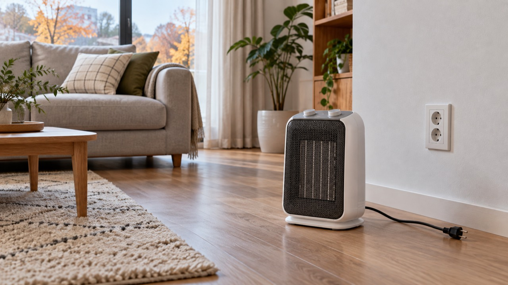

전기히터 전원이 안 켜질 때는 콘센트·차단기·전도 안전스위치·예약 설정을 순서대로 확인하세요. 플러그가 뜨겁거나 탄 냄새가 나면 다른 콘센트로 시험하지 말고 즉시 사용을 중단해야 합니다.
흡입구 막힘이나 주변 공간 부족으로 과열 보호가 작동할 수 있습니다. 플러그를 뽑고 충분히 식힌 뒤 먼지를 제거하고 사방에 여유 공간을 둡니다. 정확한 간격은 모델 설명서를 따르세요.
벽면 콘센트가 정상이고 제품을 평평하게 세웠는데도 무반응이거나, 차단기가 반복해서 내려가거나, 스위치에서 소리·냄새가 나면 모델명과 차단 발생 상황을 기록해 점검을 받으세요.
겨울 난방가전의 공통 점검은 난방가전 문제 해결 글 모음에서 이어서 볼 수 있습니다.
한국전기안전공사 전기안전 정보와 제조사 사용설명서를 함께 확인하세요.